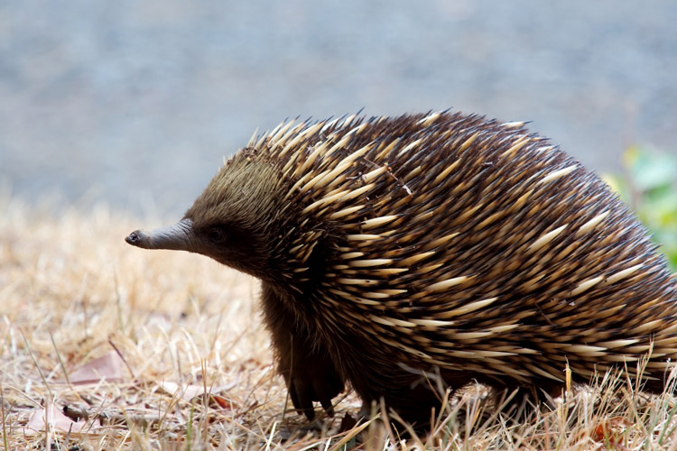

Ехидны — млекопитающие из одноименного семейства отряда Однопроходных. Их единственным по-настоящему близким родственником является утконос. Кроме того, отдаленные связи можно проследить между ехиднами и более совершенными насекомоядными: ежами и землеройками. Само название ехидна происходит от древнегреческого слова «эхинос» («еж») и порождено чрезвычайной колючестью зверя. В мире насчитывается всего 3 вида этих млекопитающих: австралийская ехидна, проехидна Аттенборо и проехидна Брюйна.
